DataViz Makeover 2 for ISSS608: Visual Analytics.
The original visualization can be seen below.
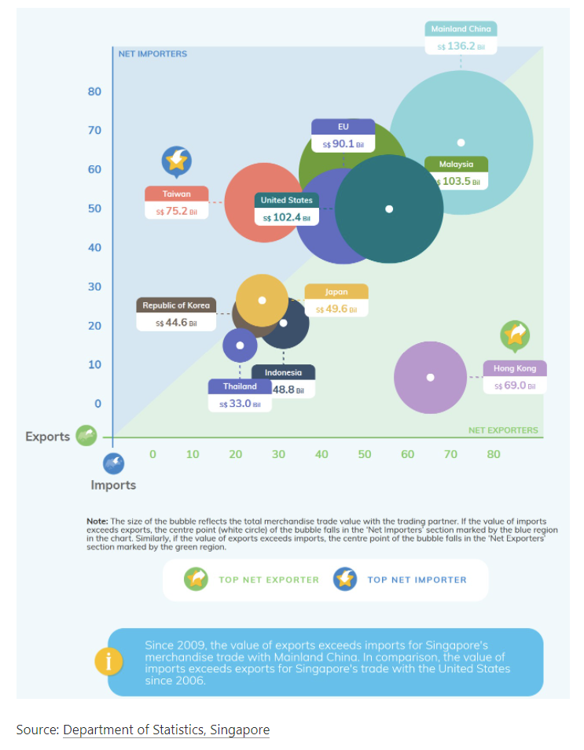
The title of the graph does not convey the intent of the graph well.
The content of the graph
1.The color of the circles and notes in the chart are too complex and overlap each other.
2.The explanatory notes below the graph are in different font sizes and colors from each other, and the borders are not aligned.
The proposed design is as follows.
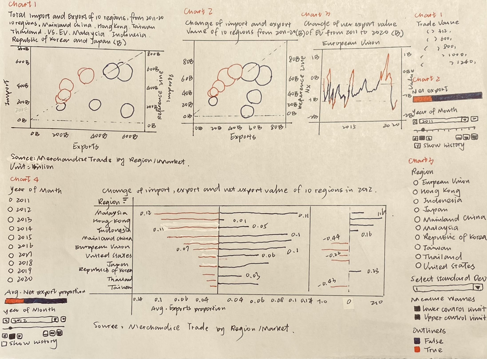
Please view the interactive visualization on Tableau Public here.
| No | Step | Action |
|---|---|---|
| 1 | Unzip the output folder downloaded from the SingStat website. Load the outputFile excel file into Tableau Prep Builder. Drag the ‘T1’ and ‘T2’ worksheet into main pane. | 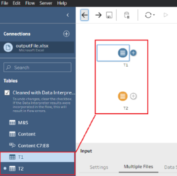 |
| 2 | Use the Data Interpreter. Rename ‘T1’ and ‘T2’ to ‘Import’ and ‘Export’ respectively and initiate the cleaning node from each data node. | 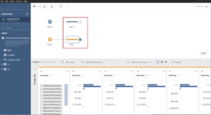 |
| 3 | Under the ‘Clean 1’ node, clean ‘Variables’ using ‘Split Values’ with ‘(’ as the separator. Rename column as ‘Country’. Repeat for ‘Clean 2’. | 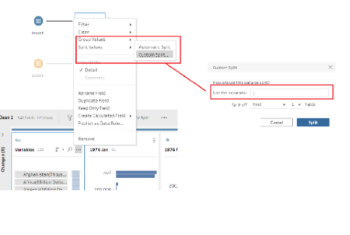 |
| 4 | Under ‘Clean 1’ node, filter the rows under ‘Country’ to remove non-Country. Repeat for ‘Clean 2’. | 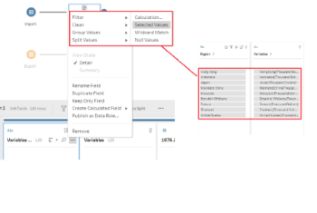 |
| 5 | Under ‘Clean 1’ and ‘Clean 2’, rename the variable ‘Split-1’ to ‘Region’. | |
| 6 | Add Pivot nodes after ‘Clean 1’ and ‘Clean 2’. Under ‘Pivot 1’, select all months under ‘Fields’ to the ‘Pivoted Fields’ panel. Repeat for ‘Pivot 2’. | 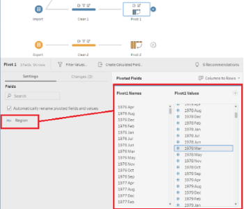 |
| 7 | Under ‘Pivot 1’, rename ‘Pivot1 Names’ to ‘Month’ and ‘Pivot1 Values’ to ‘Import (K)’. Repeat for ‘Pivot 2’ but rename ‘Pivot2 Values’ to ‘Exports(K)’. | 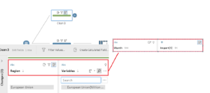 |
| 8 | Under ‘Pivot 1’ and ‘Pivot 2’, remove ‘Variables’. | 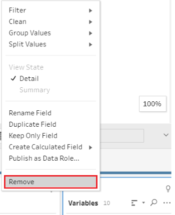 |
| 9 | Under ‘Pivot 1’ and ‘Pivot 2’, change ‘Month’ data type to ‘Date’. | 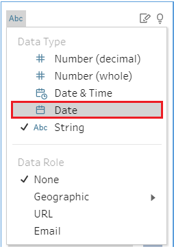 |
| 10 | Under ‘Import’ node, add ‘Clean 3’ and choose ‘European Union’ only. Under ‘Export’ node, add ‘Clean 4’ and choose ‘European Union’ only. | 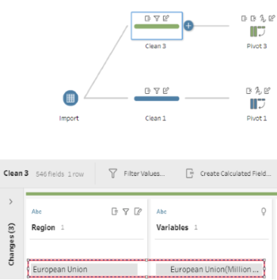 |
| 11 | Under ‘Clean 3’ and ‘Clean 4’ nodes, repeat for ‘Clean 1’ and ‘Clean 2’. But not change the ‘Pivot values’. | 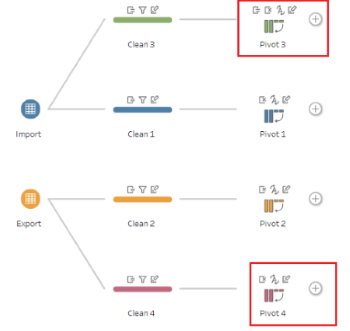 |
| 12 | Under ‘Pivot 3’ and ‘Pivot 4’ nodes, create a new calculated field to unify the unit of ‘European Union’ and remove ‘Pivot values’. | 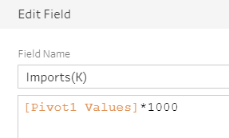 |
| 13 | Do a union between ‘Pivot 1’ and ‘Pivot 3’, another between ‘Pivot 2’ and ‘Pivot 4’ and remove ‘Table names’ column. | 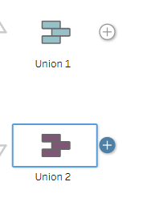 |
| 14 | Under ‘Import’ node, add ‘Clean 5’ and choose ‘Total Merchandise Imports’ only. Under ‘Export’ node, add ‘Clean 6’ and choose ‘Total Merchandise Imports’ only. | 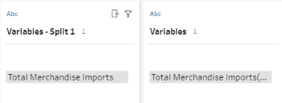 |
| 15 | Under ‘Clean 5’ and ‘Clean 6’ nodes, add ‘Pivot 5’ and ‘Pivot 6’. Delete unnecessary fields, rename variables and change variable type. | 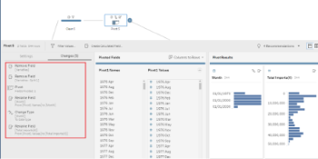 |
| 16 | Do a full join between ‘Union 1’ and ‘Pivot 5’, ‘Union 2’ and ‘Pivot 6’. With ‘Month’ as the join clauses. Remove unnecessary fields ‘Month-1’. | 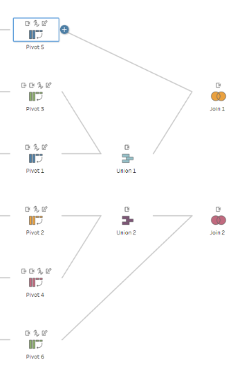 |
| 17 | Do a full join between ‘Join 1’ and ‘Join 2’ with ‘Region’ and ‘Month’ as the join clauses. Remove unnecessary fields ‘Month-1’ and ‘Region-1’. Create a ‘Clean’ node after ‘Join 3’ to merge duplicated country and month variables. | 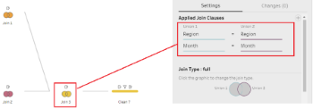 |
| 18 | Add new calculation fields using ‘Imports(K)’ and ‘Exports(K)’ by 1000 and name ‘Imports’ and ‘Exports’. Use ‘Filter’ under ‘Month’ column and choose the time from January 2011 to December 2020.Remove the unnecessary fields. | 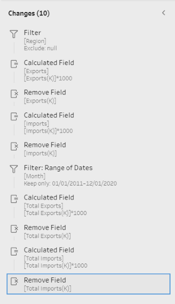 |
| 19 | Create a ‘Output’ node after ‘Clean 7’ node and save output as ‘Singapore Merchandise Trade by Region_New’. | 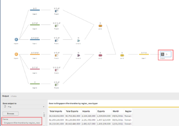 |
| 20 | Import the data into Tableau. | 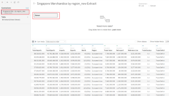 |
| 21 | For chart 1, create a new worksheet called ‘M&X’. Drag ‘Exports’ to “Columns” and ‘Imports’ to “Rows”. | 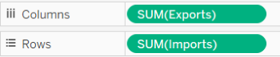 |
| 22 | Create a new calculation field called ‘Trade Value’. | 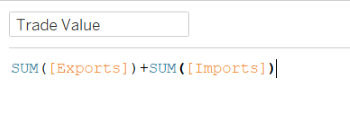 |
| 23 | Create a new calculation field called ‘Net export’. | 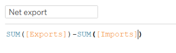 |
| 24 | Under “Marks” panel, use ‘Net export’ as “Color”; ‘Trade Value’ as “Size” and ‘Region’ as “Detail”; ‘Region’ as “Label”. Choose the “Circle” as shape. | 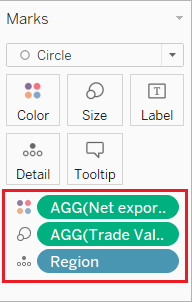 |
| 25 | Edit the color of ‘Net export’, choose “Red-Blue Diverging”, “Use Full Color Range” and “Center” from “0”. Under “Marks” panel, change “Opacity” to 80% and “Border” to white. | 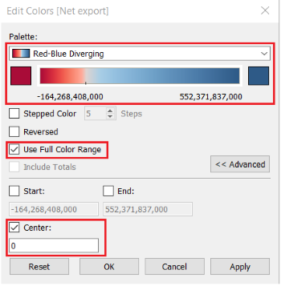 |
| 26 | Create a new calculation field called ‘Reference Line’. | 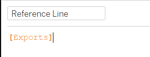 |
| 27 | Drag ‘Reference Line’ to “Rows”. Under ‘SUM(Reference Line)’ choose “Dual Axis” and right click on y-axis choose “Synchronize Axis”. | 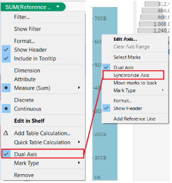 |
| 28 | Right click on the shape of ‘Reference Line’ and choose “Show Trend Lines”. Under “Marks” of ‘SUM(Reference Line)’, make the color of ‘SUM(Reference Line)’ is transparent. | 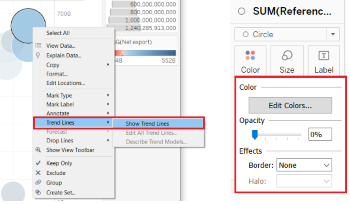 |
| 29 | Create a new calculation field called ‘Trade Deficit’. | 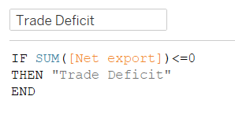 |
| 30 | Create a new calculation field called ‘Trade Surplus’. | 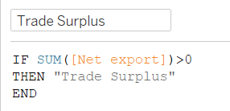 |
| 31 | Create a new calculation field called ‘Ranking by Net Export’. | 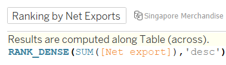 |
| 32 | Under “SUM(Imports) Marks”, drag ‘Imports’, ‘Exports’, ‘Net Exports’, ‘Ranking by Net Export’, ‘Trade Deficit’ and ‘Trade Surplus’ into “Tooltip”. Edit the content of the “Tooltip” and change the units of ‘SUM’ variables. | 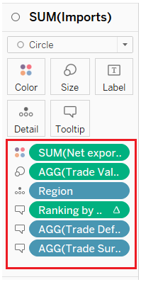 |
| 33 | Click on the small triangle of the ‘Ranking by Net Export’ and choose “Computing by region”. The “Tooltip” looks like the picture. | 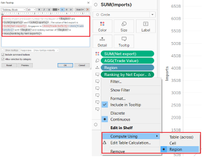 |
| 34 | Create a new worksheet called ‘Time Series’. Drag ‘Month’ to “Columns”, ‘Net Export’ to “Rows” and “Color”. “Color” is the same in “M&X”. | 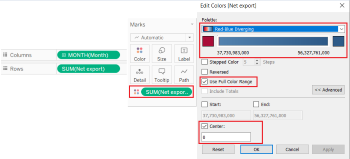 |
| 35 | Drag ‘Region’ to “Filters” panel. Right click on ‘Region’ and choose “Show Filter”. Under “Region” panel, right click on small triangle. Choose the “Single Value” and cancel “Show All Value”. Add an reference line of average. | 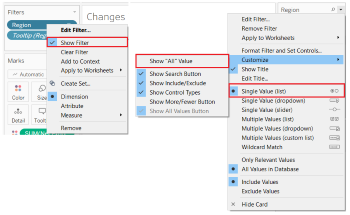 |
| 36 | Insert ‘Region’ into the graph title and back to “M&X”. Insert the new graph to “Tooltip”. | 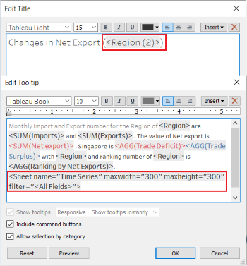 |
| 37 | The final graph looks like the picture and the title of the graph is ‘Total merchandise import and export of 10 regions, from 2011-2020’, subtitle is ‘10 regions: Mainland China, Hong Kong, Taiwan, Thailand, United States, European Union, Malaysia, Indonesia, Republic of Korea and Japan.’ | 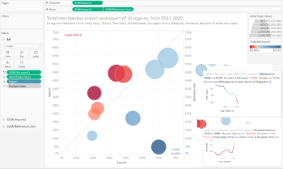 |
| 38 | Duplicate “M&X” and rename “Interactive M&X”. Remove the content of “Tooltip” and edit new content. | 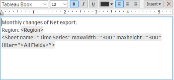 |
| 39 | Drag ‘Month’ into pages. From “Year” panel, click on “Show history” and “Show Trails”. | 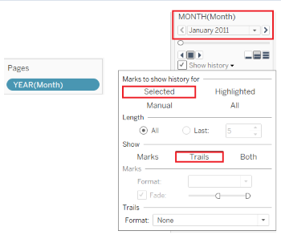 |
| 40 | Click on “Format” and “Animations”. Under “Animations” panel, click on “On” of “Workbook Default” and change “Duration” to “1.00 seconds(Slow)”. | 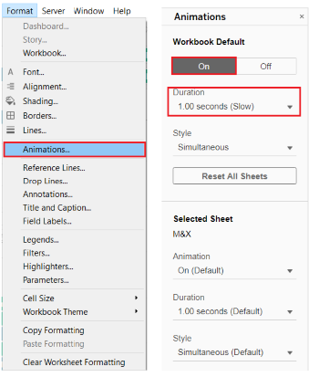 |
| 41 | The final graph looks like the picture and the title of the graph is ‘Change of merchandise import and export value of 10 regions from 2011 to 2020.’ | 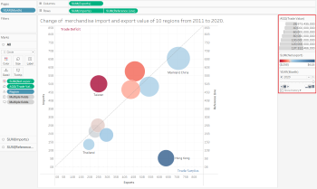 |
| 42 | Create a new “Worksheet” called “Changes in Regions”. Create a new parameter called “Select Standard Deviation”. | 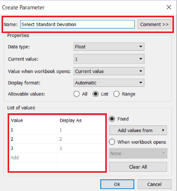 |
| 43 | Create new calculations called ‘Lower control limit’ and ‘Upper control limit’ separately. | 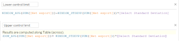 |
| 44 | Drag ‘Region’, ‘Month’ to “Columns”; ‘Net export’, ‘Lower control limit’, ‘Upper control limit’ to “Rows”; ‘Region’ to “Filters” and choose the “Show Filters”. Right click on ‘Select Standard Deviation’ and choose “Show Parameter”. | 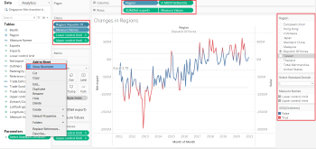 |
| 45 | Create a new calculation called ‘Outliers’ and drag to “Color” under “SUM(Net export) Marks”. | 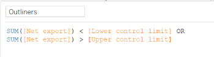 |
| 46 | The final graph looks like the picture and the title of the graph is ‘Change of net export value of |
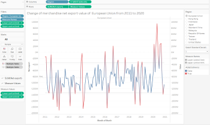 |
| 47 | Create a new worksheet called “Changes in Proportions”. Create new calculations ‘Exports proportion’, ‘Import proportion’ and ‘Net Export proportion’. | 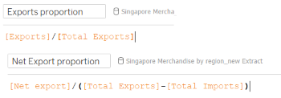 |
| 48 | Drag ‘Exports proportion’, ‘Import proportion’ and ‘Net Export proportion’ to “Columns”, ‘Region’ to “Rows”. Right click on y-axis of ‘Exports proportion’ and choose “Reversed”. | 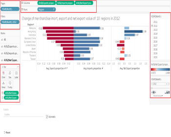 |
| 49 | Drag ‘Month’ to “Pages” and “Filters”. Drag ‘Exports proportion’, ‘Import proportion’ and ‘Net Export proportion’ to “Label”. | 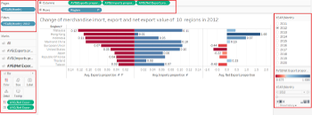 |
| 50 | The final graph looks like the picture and the title of the graph is ‘Change of import, export and net export value of 10 regions in <YEAR(Month)>’. | |
| 51 | Create a dashboard called ‘Makeover’ and put all graphs in. Add the data source address and calculation unit. |
Chart 1: From total merchandise import and export number perspective
Chart 2: From the changes of total merchandise import and export number from 2011 to 2020 perspective
For trade deficit perspective, the Taiwan is still dominant the merchandise trade with Singapore. But the United States loss the dominant position in 2020.
For trade surplus perspective, the Hong kong is an very important trade partner. From 2011 to 2020, the net export value of Hong Kong exceed other regions a lot.
Chart 4: We can found that the import and export value of Mainland China, Malaysia is 10% of the total merchandise trade number of Singapore respectively from 2011-2020. So these three regions are important trade partners for Singapore.